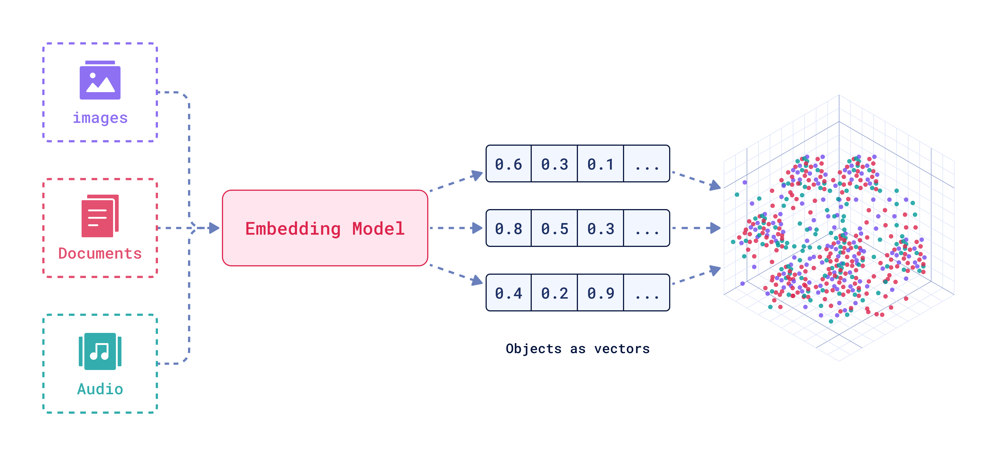

什么是向量嵌入?
by @karminski-牙医

(图片来自 qdrant.tech)
向量嵌入（Vector Embeddings）是将复杂数据（如文本、图像、音频等）转换为密集数值向量的过程和结果。这些向量通常是高维的数字数组，使机器能够"理解"数据间的语义关系。
其核心思想是通过数学表示捕捉原始数据的语义信息，将抽象概念映射到多维空间，这样语义空间的相似性，就可以转化为向量空间中的接近性(数学问题)。
向量嵌入工作流程
典型的向量嵌入过程包含三个关键阶段：
- 特征提取：从原始数据（文本、图像等）中识别和提取关键特征
- 向量化转换：将提取的特征通过神经网络映射到高维向量空间
- 维度处理：根据需要进行降维或标准化，优化向量表示
这种机制使计算机能够以数学方式处理和"理解"复杂的非结构化数据。
向量嵌入的优点（针对数据库场景）
- 稠密表示：相比传统稀疏向量（如TF-IDF）更节省存储空间
- 相似性保持：原始数据相似性在向量空间得以保留（余弦相似度≈语义相似度）
- 跨模态统一：允许文本/图像/视频在同一空间进行联合检索
- 索引友好：适合HNSW、IVF-PQ等近似最近邻算法加速
- 增量更新：支持新数据嵌入无需重建整个向量空间
向量嵌入可能存在的问题（数据库视角）
- 维度膨胀：维度特别多的向量会显著增加存储和内存消耗
- 距离失真：降维处理可能破坏原始空间关系
- 版本漂移：不同模型版本生成的向量不可直接比较
- 冷启动：空数据库阶段难以建立有效索引结构
- 精度衰减：量化压缩（如int8）导致的检索精度损失
核心应用场景
- 混合搜索：结合元数据过滤与向量相似性检索（如语义搜索）
- 内容去重：通过向量距离识别重复/相似内容
- 智能推荐：基于用户行为向量的实时物品匹配（兴趣相似度计算）
- 时序分析：追踪向量漂移模式（用户兴趣/内容热点的演化分析）
- 知识管理：RAG系统中的高效知识检索与上下文关联
- 聚类分析：自动发现数据中的潜在模式和分组结构
- 缓存优化：高频查询结果的向量空间缓存加速